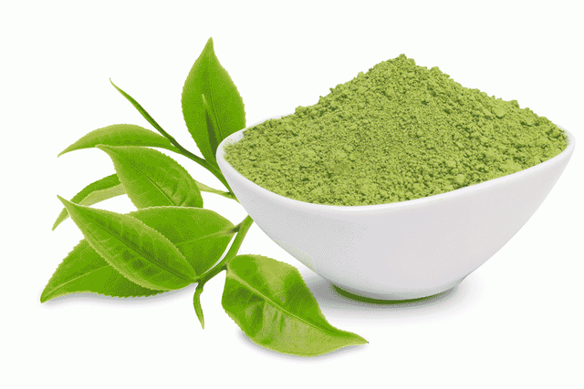
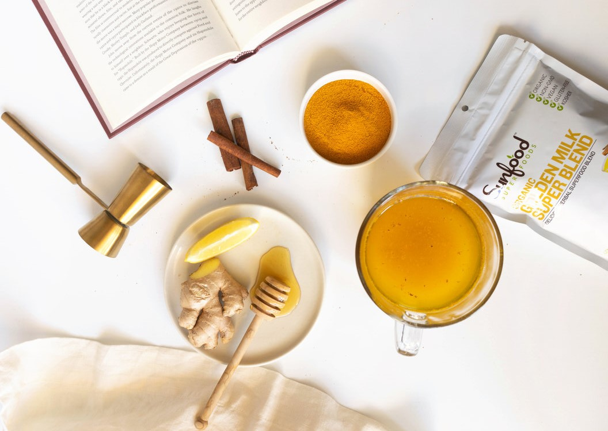

Ingredients

Certified organic matcha green tea
Our ingredients are sourced with your wellness, and the wellness of our planet in mind. We pay
careful attention to the quality and freshness of each ingredient, ensuring they pass our
rigorous quality standards, as well as the standards of our partners at the Non-GMO Project,
CCOF, and more.
Our powder products are packed in 100% UV, moisture, and oxygen-proof pouches - what does this
mean for you? It means your superfoods will remain fresh and delicious longer. We strive to
improve, check back often for updates on how the future of our packaging will be even more
sustainable!
Our passion (perhaps obsession) with only producing high-quality ingredients in each Sunfood bag
is a foundational belief that we have followed for over 25 years. Using only ingredients we
believe will make a positive difference in your well-being, well that's just who we are.

At Sunfood...
We believe in the power of real food, sourced from ethically grown superfoods from all over the world. We
are obsessed with making consciously crafted products using sustainably harvested and fair trade
ingredients, without ever compromising taste. We believe in the power of family, from our small family
owned and operated business in sunny San Diego, CA all the way to the international family farms we
partner with to bring you the healthiest and yummiest superfoods. We believe in the power of community,
sharing our passion for wellness and holistic solutions with our local stores, schools and events. This
isn’t just a way to eat, it’s a way to live.
Good for the People and the Planet
Every single pouch of superfoods is good for the people and the planet.
Your purchase directly benefits the quality of life for thousands of people, from farm to shelf.
We partner with small farms, co-ops and independent farmers whenever possible to ensure equitable
trade, fair
trade and sustainable sourcing practices positvely impact the well-being of the communities that
grow and
harvest our ingredients.
Every time you buy Sunfood superfoods, you're saying yes to improving your health and the
lives of
many people around the world.
Thank you for being the best part of us.
You Support the
Planet
An increase in organic product demand leads farmers to get their land organic-certified. It
helps
convert more acreage to growing more plant foods and reduces dairy farming.
You Support the
Farming Communities
As the superfood demand grows, so does the quality of life of the farming communities. When
you
buy Sunfood superfoods, you contribute to uplifting remote areas where the crops grow.
You Support Your
Well-being
We combine the best superfoods into functional and easy-to-use nutritional solutions that are
as
unique as your lifestyle and goals.
Every pouch filled with superfoods helps these regions produce great products that get exported
worldwide. This leads to more jobs, gives families additional income, helps build roads, and
provides greater opportunities for a better quality of life for all.

 Verified Buyer
Verified Buyer